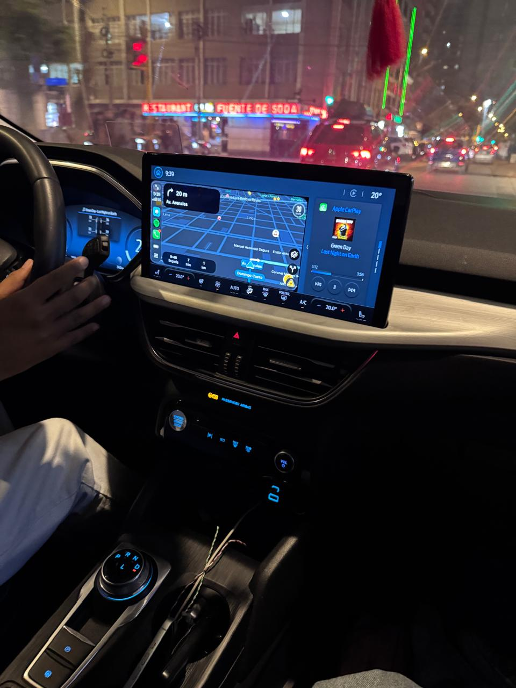
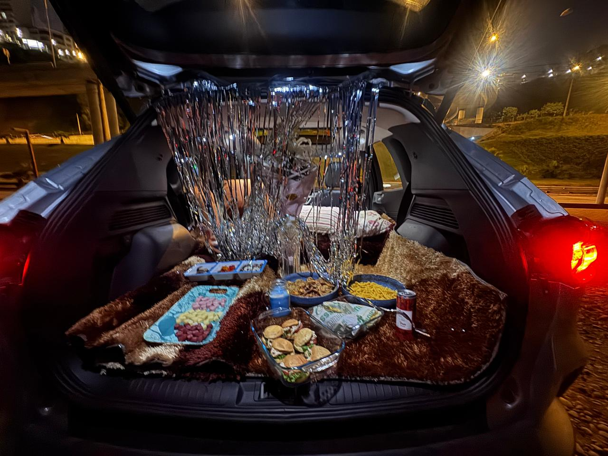
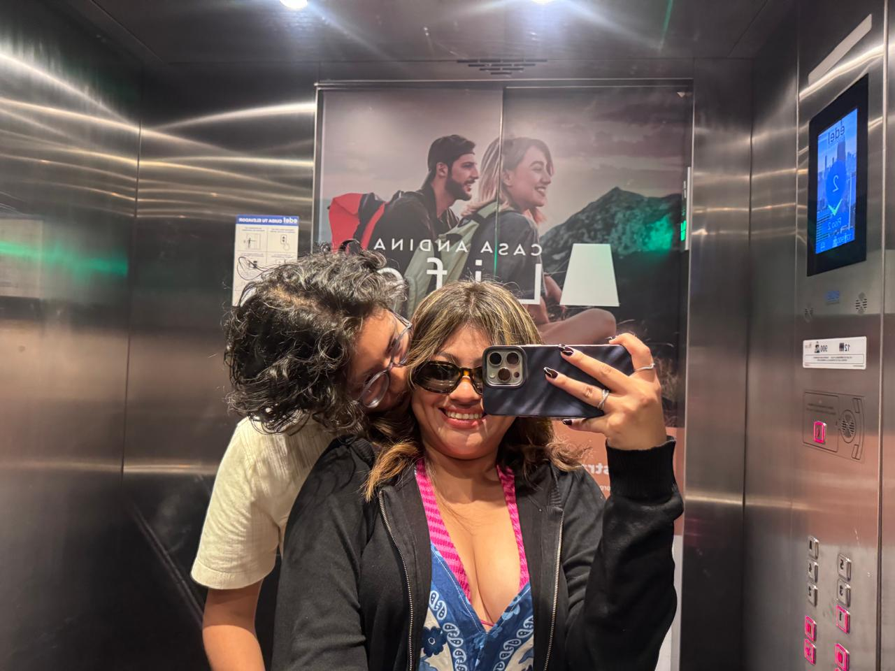
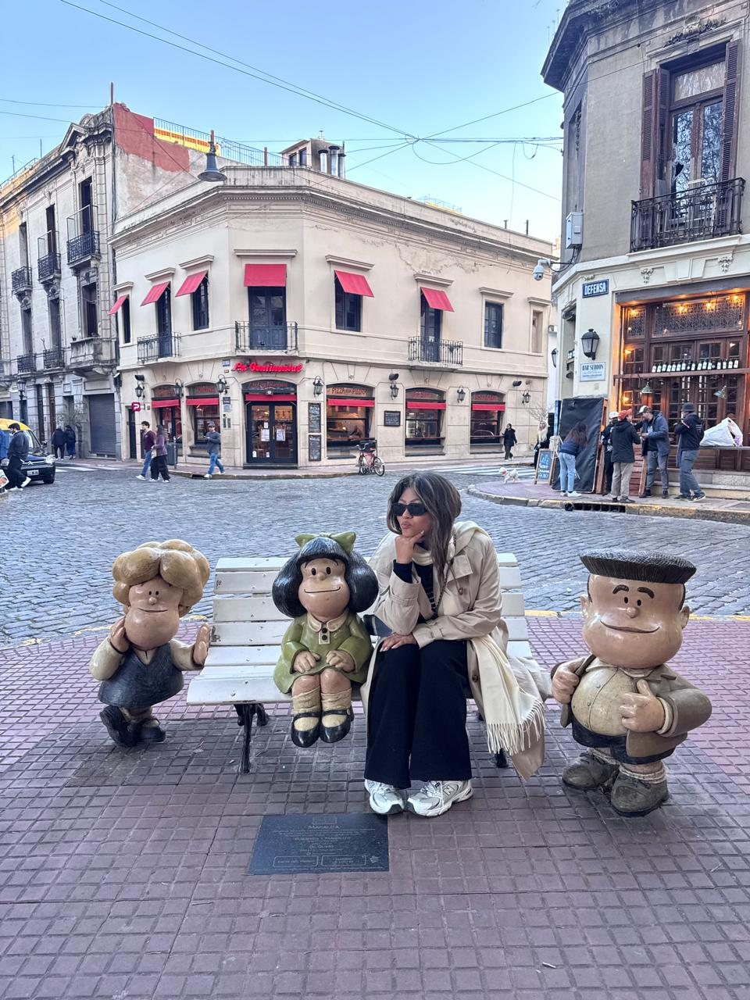
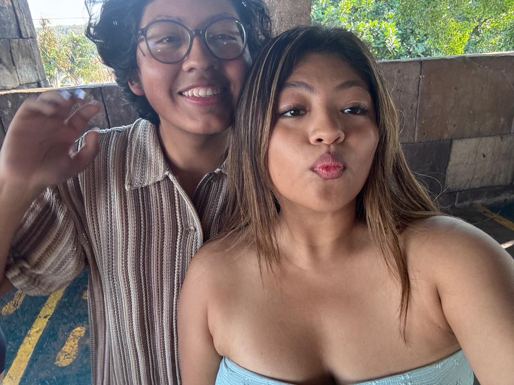
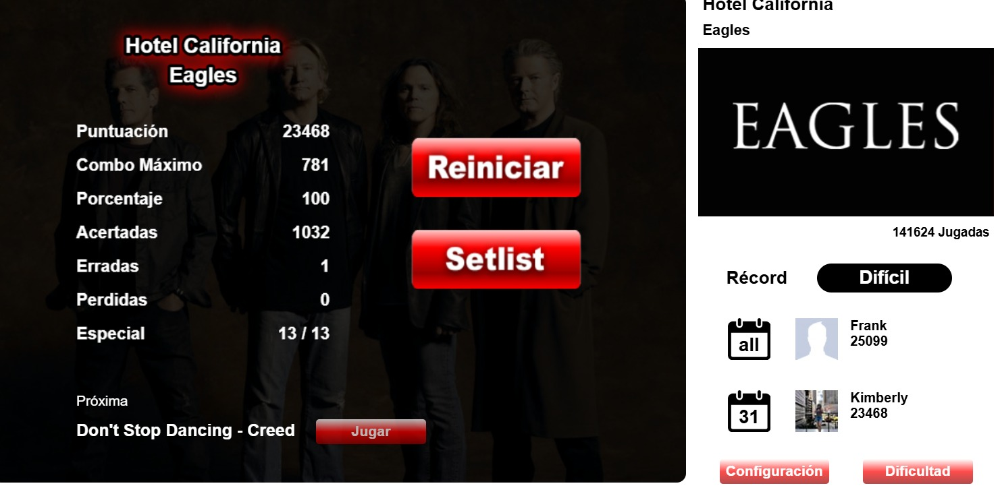
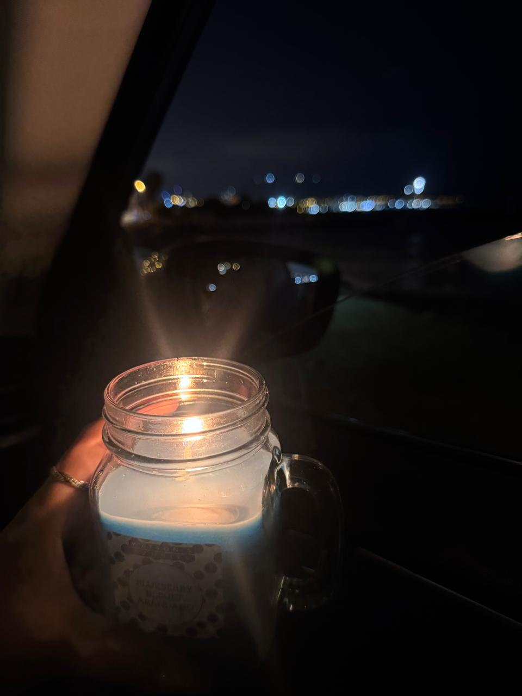
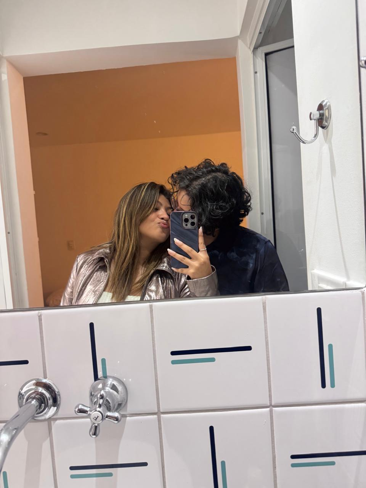
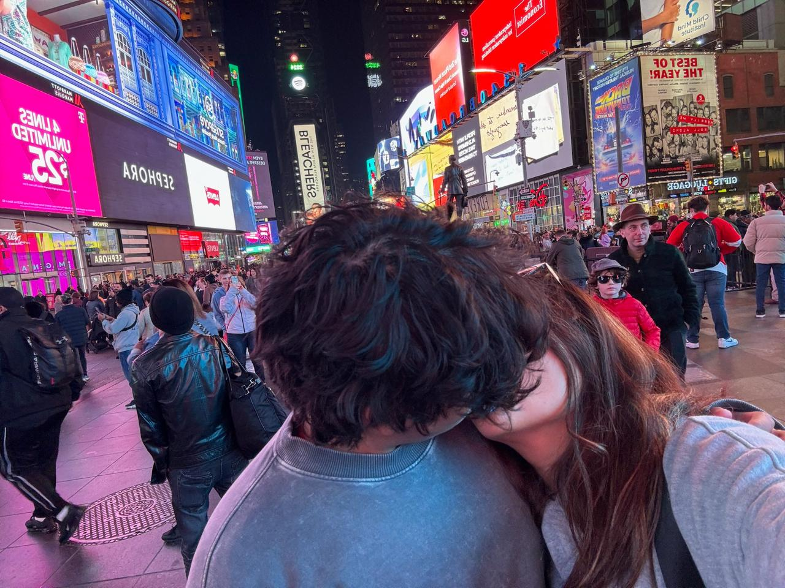

Volver al equilibrio.
Nos conocimos en Física II. Hace cuatro años intenté explicarte lo que sentía con un péndulo. Hoy seguimos siendo un poquito eso: movimiento, caos, regreso, aprendizaje.
Solo cambios que sí quiero demostrar.
Sé que me he equivocado demasiado, demasiado. Y no quiero pedirte que olvides nada ni convencerte con palabras bonitas. Quiero que mis cambios se noten en cómo te amo, cómo te respeto y cómo enfrento las cosas cuando se ponen difíciles.
No traiciones.
Ni las más mínimas.
Cuidar nuestra confianza.
No quiero volver a justificar ninguna acción que pueda hacerte sentir traicionado, inseguro o reemplazable.
Quiero que la fidelidad sea algo que puedas sentir, no algo que tengas que comprobar.
Amor incondicional.
Y pelear por ti.
Elegirte incluso cuando sea difícil.
No quiero que amar sea fácil únicamente cuando todo está bien.
Quiero aprender a pelear por nosotros sin pelear contra ti.
Hablar desde la razón.
Incluso cuando duela.
Ser razonable y estar dispuesta a hablar.
Quiero aprender a detenerme, escuchar y explicar lo que siento sin convertir cada desacuerdo en una batalla.
Quiero que podamos resolver, no destruir.
Y espero lo mismo de ti.
Porque esto tiene que ser de dos.
Equipo.
Yo quiero trabajar en todo esto, pero también necesito sentir que tú estás dispuesto a hacerlo conmigo.
No quiero perfección. Quiero reciprocidad.
Green Day estaba ahí antes de “nosotros”.
Me escribiste después de que subí una historia de Green Day. Y me gusta pensar que, de alguna forma, una banda terminó siendo una pequeña puerta hacia toda esta historia.
Green Day · recuerdos · nosotros
01 — OUR SONG
Last Night on Earth
Green Day
02 — Estoy segura que recuerdas esta
Ordinary Word
Green Day
03 - Calma es donde encontraremos nuestro hogar
Good Ridance (THE time of our life)
Green Day
Desde que regresamos a casa.
No ha sido una línea recta. Hemos tenido momentos preciosos, momentos difíciles y recuerdos que quisiera guardar para siempre. Esta es nuestra historia desde que decidimos volver.

Tiempos malos, pero regresamos a casa.
No regresamos en el momento más fácil ni siendo las versiones más perfectas de nosotros. Pero entre todo el caos, de alguna manera volvimos a encontrarnos.

Amor, comprensión y muchos food tastes.
Volvieron las risas, las conversaciones, aprender otra vez cómo querernos y obviamente probar demasiada comida juntos.
Las cosas pequeñas empezaron a sentirse enormes otra vez.

Me enamoré cada segundo un poquito más de ti.
Paracas fue increíble. Al final descubriste algo horrible por lo que me arrepentiré toda mi vida, y no quiero borrar ni minimizar esa parte.
Pero también recuerdo mirarte durante ese viaje y sentir que me enamoraba cada segundo, cada segundo más de ti.

Te amé, te amé, te amé.
Argentina fue eso para mí. Verte y pensar una y otra vez cuánto te amaba.
También descubrí algo feo, y fue otro recordatorio de que nuestra historia tiene cosas hermosas y otras que todavía necesitamos aprender a reparar.

My dream came true.
Brasil fue mi sueño hecho realidad. Estar contigo allá, conocer lugares, despertar sabiendo que estabas cerca y por unos días simplemente vivir una pequeña vida juntos.
Al final se descubrió una verdad horrible que espero con todo mi corazón que jamás vuelva a pasar.
Pero todo el amor y el esfuerzo que pusimos después también forman parte de nuestra historia.

La vida contigo se siente 30 veces mejor.
Después de Guitar Flash, las llamadas, las tonterías, las conversaciones y todo el esfuerzo que estamos poniendo en nosotros, me recuerdan cuánto me gusta compartir mi vida contigo.
Me hacen querer que esos 45 días se conviertan en 1 y que mi corazón explote de amor cuando vuelva a verte.

Lo que deseo ahora.
Espero que los meses que vienen sean hermosos. Que podamos querernos con más calma, cuidarnos más, aprender de lo que dolió y hacer que todo el esfuerzo que estamos poniendo realmente valga la pena.

Otro país, por favor.
Antes del gran sueño, espero que todavía nos espere otro viaje internacional. Otro aeropuerto, otra ciudad, otra comida que probar y otro pedacito del mundo que podamos convertir en un recuerdo nuestro.

Regresar a New York. Juntos.
Y después… New York.
Quiero volver a esa ciudad, pero esta vez contigo. Caminar de noche entre todas esas luces, perdernos, comer cualquier cosa a una hora absurda y mirar Manhattan sabiendo que finalmente llegamos juntos.
Maybe our favorite trip hasn't happened yet. ♡
Hay algo que todavía quiero decirte.
Pero aparentemente no te lo voy a poner tan fácil.
No perfecto. Sí sincero.
Hace cuatro años te hice una cajita y terminé explicándote un péndulo porque, aparentemente, esa era mi forma de intentar convertir lo que sentía por ti en algo que pudiera entender.
Hoy han pasado demasiadas cosas como para escribirte una carta ingenua o hacer como si nuestra historia hubiera sido perfecta. Hemos tenido momentos que guardaría para siempre, otros que todavía duelen y otros que seguimos aprendiendo a entender.
Pero incluso después de todo, todavía existen cosas nuestras que me hacen sonreír. Nuestras llamadas, nuestras tonterías, probar comida juntos, los viajes, Guitar Flash, Brasil, Argentina, Paracas, nuestras conversaciones absurdas y esa sensación de que cuando estamos bien, tú y yo podemos sentirnos demasiado casa.
Mi corazón todavía está recuperándose y creo que merece hacerlo con calma. Por eso esta vez no quiero prometerte el mundo, ni decirte que todo será perfecto, ni escribirte un “para siempre” que ninguno de los dos puede garantizar.
Prefiero decirte algo mucho más honesto, todavía quiero que lo que venga sea bonito. Quiero que aprendamos a cuidarnos mejor, a escucharnos incluso cuando estamos molestos, y a recordar que incluso cuando peleamos seguimos siendo dos personas que se aman y no dos enemigos intentando ganar.
Me gusta imaginar que tal vez, después de tantas oscilaciones, algún día encontremos un equilibrio que no signifique dejar de movernos, sino saber siempre cómo volver.
Y mientras tanto, todavía quiero más canciones, más food tastes, más aeropuertos, más ciudades, más llamadas, más noches hablando tonterías y ojalá algún día volver a New York contigo.
Feliz un mes más, Gabito, amor de mi vida, TE AMO TE AMO TE AMO.
No desde la perfección.
Desde el cariño, la intención
y todo lo que todavía quiero cuidar contigo.